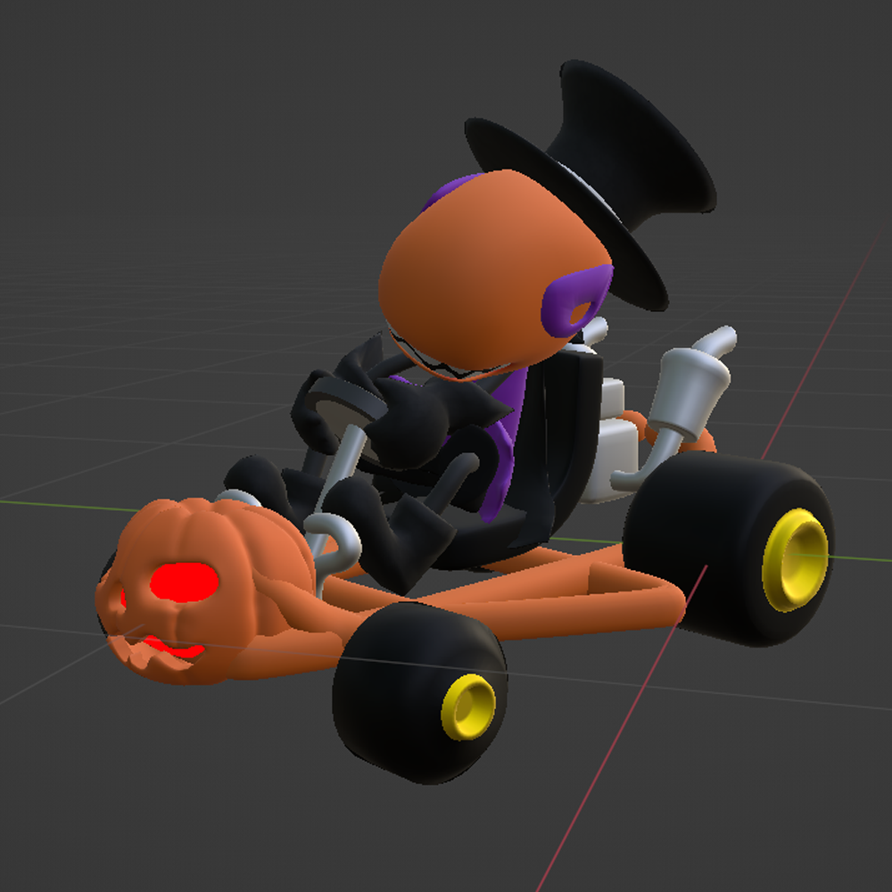
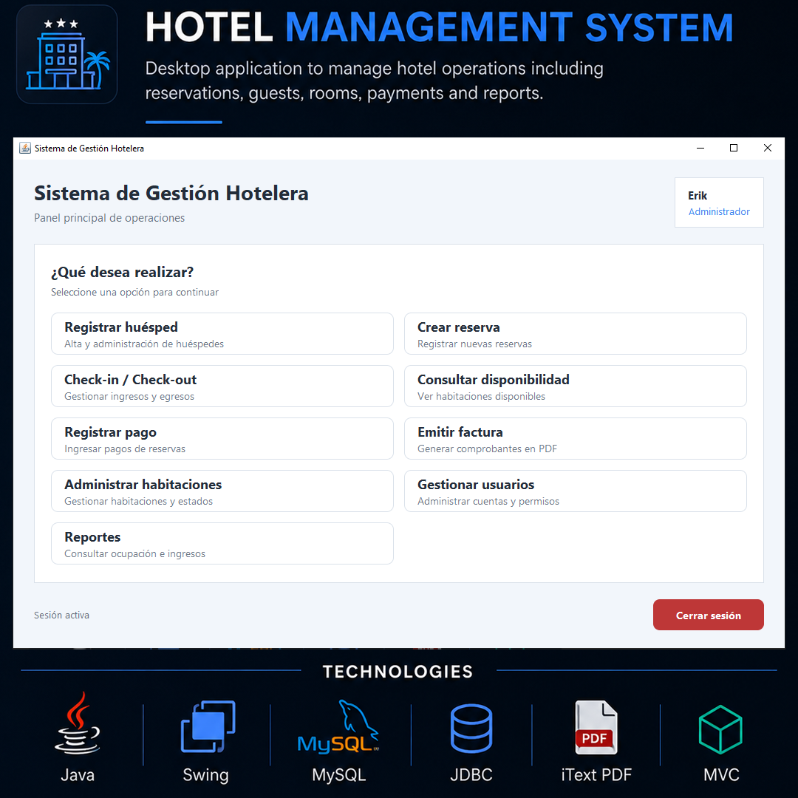
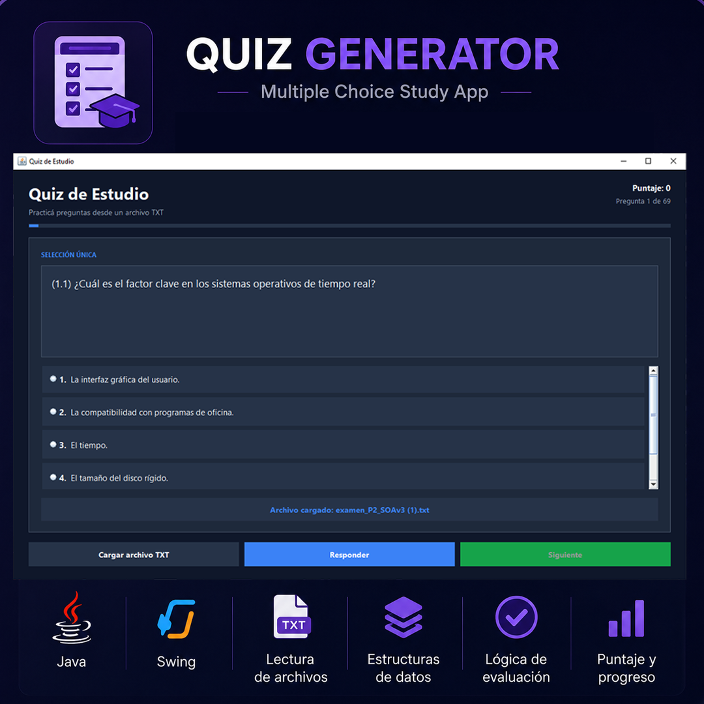

Formación
Licenciatura en Informática
Etapa avanzada de la carrera
Hola, soy
Desarrollador Backend Java en formación
Estudiante avanzado de Licenciatura en Informática, enfocado en Java, Spring Boot, APIs REST y bases de datos MySQL. Construyo aplicaciones orientadas a resolver problemas reales y sigo fortaleciendo mis conocimientos de arquitectura backend.
Conocé mi perfil

Mi objetivo profesional es desarrollarme como Java Backend Developer. Durante la carrera trabajé en aplicaciones de escritorio, sistemas conectados a MySQL, diseño orientado a objetos, pruebas y proyectos académicos de arquitectura de software.
Actualmente continúo profundizando Spring Boot, desarrollo de APIs REST, seguridad y buenas prácticas. Me interesa escribir código claro, comprender cómo funciona cada componente y convertir requisitos concretos en soluciones mantenibles.
Licenciatura en Informática
Etapa avanzada de la carrera
Java Backend
Spring Boot y MySQL
Tecnologías y conocimientos
Aplicaciones y trabajos destacados

Java Desktop
Aplicación Java Swing con MySQL para gestionar usuarios, huéspedes, habitaciones, reservas, pagos, facturación, disponibilidad y reportes. Implementa arquitectura MVC, DAO, validaciones y principios de POO.

Android
Aplicación móvil que captura imágenes, reconoce texto y permite reutilizar el contenido obtenido. Desarrollada con CameraX, ML Kit y una interfaz moderna para Android.

Java Desktop
Programa con interfaz gráfica que carga preguntas desde archivos de texto, genera evaluaciones de verdadero o falso y opción múltiple, corrige respuestas y muestra la solución correcta.
Hablemos
Estoy interesado en oportunidades como desarrollador Java junior, prácticas profesionales y proyectos donde pueda seguir aprendiendo y aportar valor.